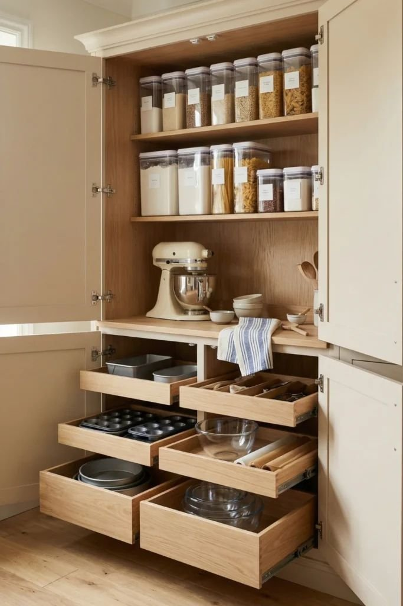
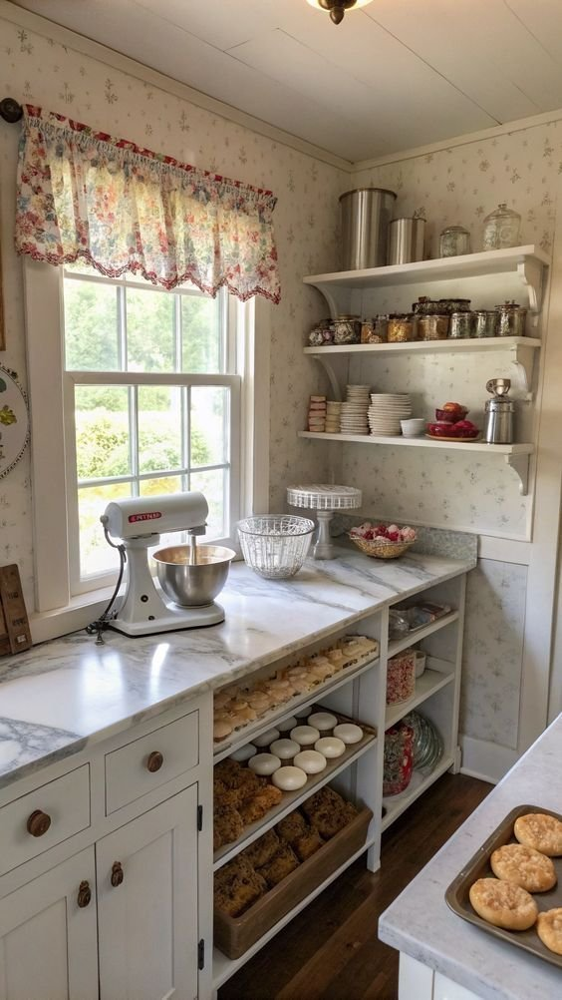
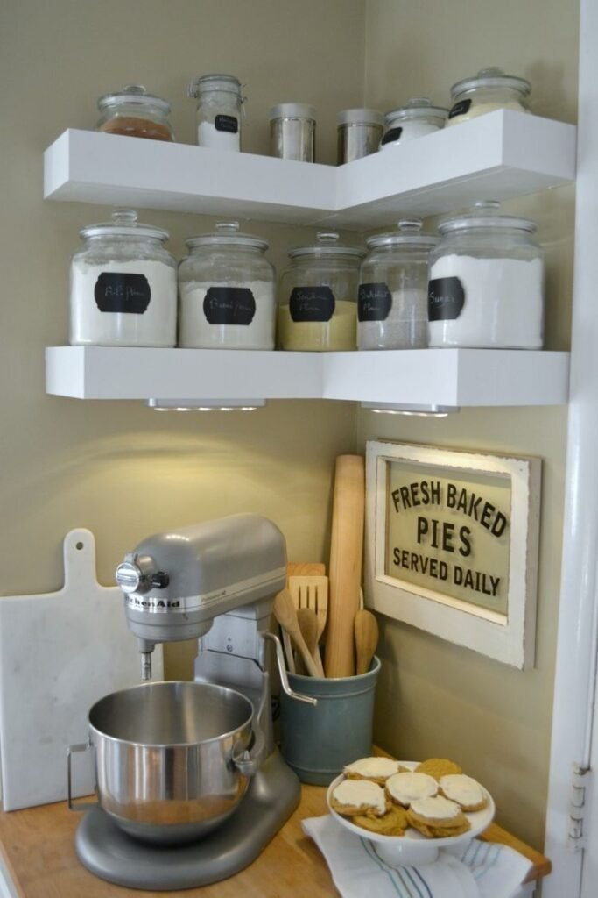
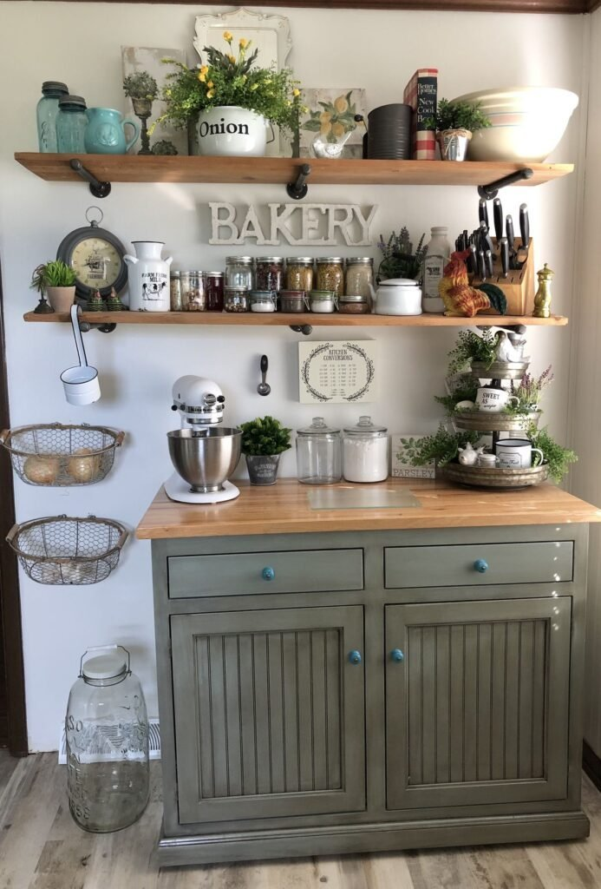
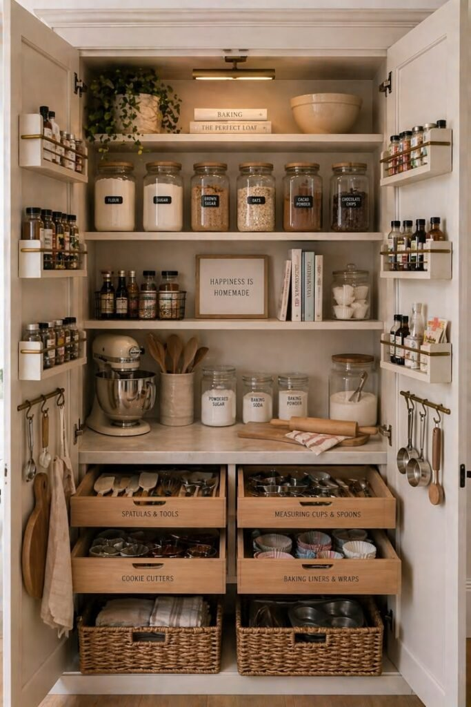
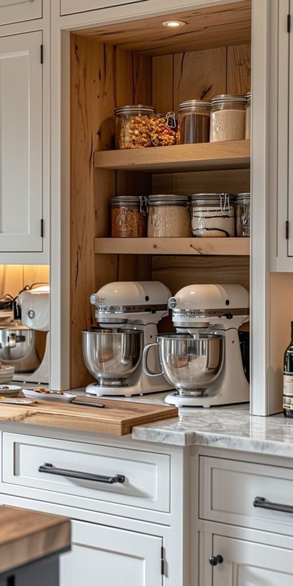
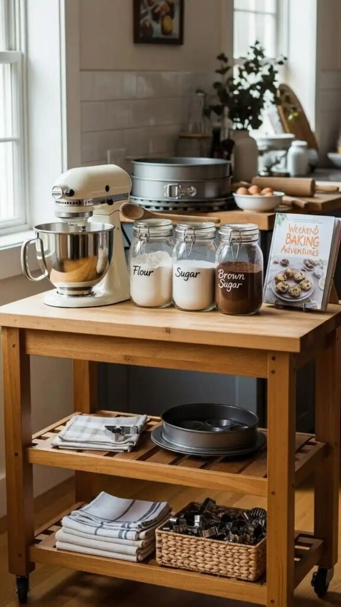
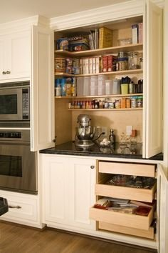
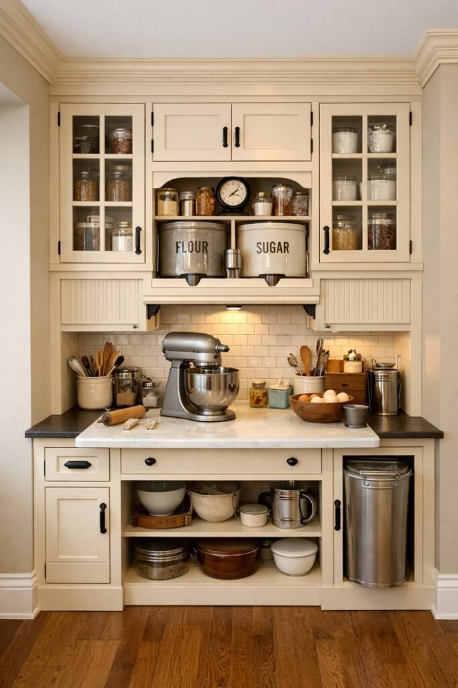

Baking makes a mess that spreads.
Flour here. Mixing bowls there. A stand mixer that needs its own outlet, somehow always right in the way.
Regular cooking doesn't really do this. Baking does.
A dedicated station fixes it — and it doesn't need its own room to work.
Most of these setups fit inside the kitchen you already have.
Here are 8 of them, from a cleared corner to a full island.

What a Good Station Actually Needs
Start with the surface.
Something flat and sturdy. Marble or a smooth counter works best for rolling dough.
Next, storage — flour, sugar, extracts, measuring tools — all within arm's reach.
Not buried three shelves back in the pantry.
If a stand mixer lives here permanently, you'll need an outlet nearby too.
And good lighting. Precise measuring and dough work both need it.

Why Bother With a Dedicated Spot at All
Baking has more steps happening at once than most everyday cooking.
Measuring, mixing, resting, baking — each one wants its own space.
A fixed spot means you're not digging through general kitchen storage mid-recipe.
It also keeps the flour and sugar mess contained to one area.
Instead of dusted across your entire kitchen.
If you bake often, the setup earns its space fast.

1. The Countertop Station
This is the easiest version, and the cheapest.
Pick a section of counter you already have. Keep it clear. Keep it just for baking.
No construction. No new furniture. Just consistent use of the space that's already there.
A tray or mat marking the zone keeps it from drifting into general clutter.
Works especially well in a smaller kitchen that can't spare a whole cabinet.

2. The Coffee-and-Baking Combo
If there's no room for two separate zones, share one.
Morning coffee and baking rarely happen at the same time anyway, so conflict is rare.
A shared tray system keeps the two sets of supplies from turning into one disorganized pile.
It's a compromise, not the ideal setup — but a smart one for a smaller kitchen.
You still get a defined spot for both hobbies without carving out double the cabinet space.
3. The Small Kitchen Nook
Got an awkward, underused corner? That's your baking station.
A slim rolling cart or a wall-mounted fold-down surface both work here.
Proof that you don't need a big kitchen. Just a corner you're willing to use on purpose.
Vertical storage matters more here than anywhere else on this list, since floor space is basically zero.

4. The Pantry Station
Got a walk-in or a generous pantry? Dedicate a few shelves entirely to baking.
Everything lands in one predictable spot.
Clear containers for flour, sugar and other staples make the whole shelf easy to scan.
Add a small fold-out or pull-out surface nearby, and you've got workspace without giving up permanent counter room.

5. The Farmhouse Station
Butcher block counters. Open wood shelving. Vintage-style canisters.
This brings real warmth to a baking zone.
It fits best in a kitchen that already leans farmhouse or traditional elsewhere.
Open storage works especially well here — the canisters and tools double as decor on their own.
Wood surfaces also hold up well to regular flour and dough work, so it's practical, not just pretty.

6. The Modern Minimalist Station
Clean lines. Closed storage. A restrained palette.
This stays looking uncluttered even with regular use.
Tools and ingredients hide behind cabinetry instead of sitting out on display.
It fits a kitchen that already leans modern, where a farmhouse setup would feel out of place.
It does ask more of you, though — nothing's meant to stay visible between uses, so it takes a bit more discipline to keep tidy.

7. The Hidden Cabinet Station
A pull-out or fold-down surface tucked inside a cabinet disappears completely when you're done.
Perfect if you want a dedicated setup without a station sitting out all the time.
The cabinet needs enough depth and clearance to pull the surface out fully, though.
It's a bigger investment upfront than most ideas here — but the cleanest result once it's closed up.

8. The Baking Island
The most ambitious version on this list, and the most rewarding if you have the space.
A full island or large peninsula, dedicated entirely to baking.
Best suited to a bigger kitchen that can spare the square footage for a single-purpose surface.
You get the most storage, the most workspace, and room for more than one person to bake at once.
Worth it if baking is a serious, regular part of your routine — not just an occasional thing.
A second sink or a built-in proofing drawer nearby takes it even further, if the budget allows.

Start Small and Let Use Decide
None of these 8 setups need a full kitchen renovation.
A cleared counter section or a couple of pantry shelves gets you most of the benefit for almost no cost.
Save the bigger investments — a hidden cabinet, a full island — for once baking has become routine rather than occasional.
Start small. Let how often you actually use it tell you whether the setup needs to grow.
The goal was never a perfect station on day one.
It's a kitchen that keeps up with how you actually bake, built one upgrade at a time.